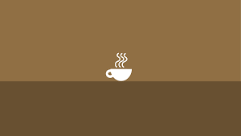

About me paragraph Hello I am Anna Crockett and the creator of a company called UmaFLor! My team and I have recently created a website so that I could sell products in order to support my music career. Our website is beautiful and cohesive with all of the different colors and pictures that go throughout it.  Some of my products include pins and jewelry. Some fun facts about me are that I love tea, art, and music. You'll be able to see this through this website hopefully. I am a church volleyball coach and a music leader at my church. I hope to be a diplomat one day to fuel my love for traveling and learning different languages. Currently I speak 3.5 languages and am learning two. I love to learn but recently I've been to tired to do much.